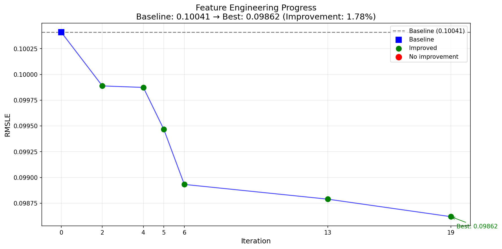

| Iter | Feature Name | Description | RMSLE | Change | Result |
|---|---|---|---|---|---|
| 0 | (baseline) | Initial model with 212 preprocessed features | 0.10041 | - | - |
| 2 |
HouseAgeAtSale# Feature: HouseAgeAtSale # Strategy: temporal # Enhances: YearBuilt (top 3) # Description: Calculates the age of the house at the time of sale. df['HouseAgeAtSale'] = df['YrSold'] - df['YearBuilt'].fillna(df['YrSold']) # YearBuilt is usually clean, but fillna for safety |
Difference: YrSold - YearBuilt # YearBuilt is usually clean, but fillna for safety | 0.09989 | +0.00052 | ✓ KEPT |
| 4 |
LivAreaPerLotArea# Feature: LivAreaPerLotArea # Strategy: size_efficiency # Enhances: GrLivArea (top 2), LotArea (top 5) # Description: Ratio of above-grade living area to total lot area, indicating building density or footprint on the lot. df['LivAreaPerLotArea'] = df['GrLivArea'] / df['LotArea'].replace(0, 1).fillna(1) # Replace 0 with 1 in LotArea to avoid division by zero |
Ratio: GrLivArea / LotArea # Replace 0 with 1 in LotArea to avoid division by zero | 0.09987 | +0.00001 | ✓ KEPT |
| 5 |
Neighborhood_Frequency# Feature: Neighborhood_Frequency # Strategy: frequency_encoding # Enhances: (Indirectly) OverallQual, GrLivArea, YearBuilt by providing context for Neighborhood # Description: Replaces each Neighborhood with the frequency of its occurrence in the dataset, indicating its prevalence. neighborhood_counts = df['Neighborhood'].value_counts() df['Neighborhood_Frequency'] = df['Neighborhood'].map(neighborhood_counts).fillna(0) # Fillna(0) for any unseen categories |
Transform: Neighborhood.map(neighborhood_counts) # Fillna(0) for any unseen categories | 0.09947 | +0.00041 | ✓ KEPT |
| 6 |
GrLivArea_OverallQual_Interaction# Feature: GrLivArea_OverallQual_Interaction # Strategy: Interaction # Enhances: OverallQual (1) and GrLivArea (2) by multiplying them. This captures homes that are both large and high quality. df['GrLivArea_OverallQual_Interaction'] = df['GrLivArea'] * df['OverallQual'] |
Interaction: GrLivArea * OverallQual | 0.09893 | +0.00053 | ✓ KEPT |
| 13 |
HasFinishedBsmt# Feature: HasFinishedBsmt # Strategy: binary # Enhances: BsmtFinSF1 (top 10), TotalBsmtSF (top 6) # Description: Binary flag indicating if the house has any finished basement area (BsmtFinSF1 or BsmtFinSF2 greater than 0). df['HasFinishedBsmt'] = ((df['BsmtFinSF1'].fillna(0) > 0) | (df['BsmtFinSF2'].fillna(0) > 0)).astype(int) |
Binary indicator: ((BsmtFinSF1 > 0) | (BsmtFinSF2 > 0)).astype(int) | 0.09879 | +0.00014 | ✓ KEPT |
| 19 |
LotShape_Ordinal# Feature: LotShape_Ordinal
# Strategy: ordinal_from_description
# Enhances: LotArea (top 6) by providing qualitative shape context.
# Description: Converts the 'LotShape' categorical feature into an ordinal numerical scale based on the level of irregularity described in the data.
lot_shape_map = {'Reg': 0, 'IR1': 1, 'IR2': 2, 'IR3': 3}
df['LotShape_Ordinal'] = df['LotShape'].map(lot_shape_map).fillna(0) # Fill with 0 (Regular) if NaN
|
Transform: LotShape.map(lot_shape_map) # Fill with 0 (Regular) if NaN | 0.09862 | +0.00017 | ✓ KEPT |